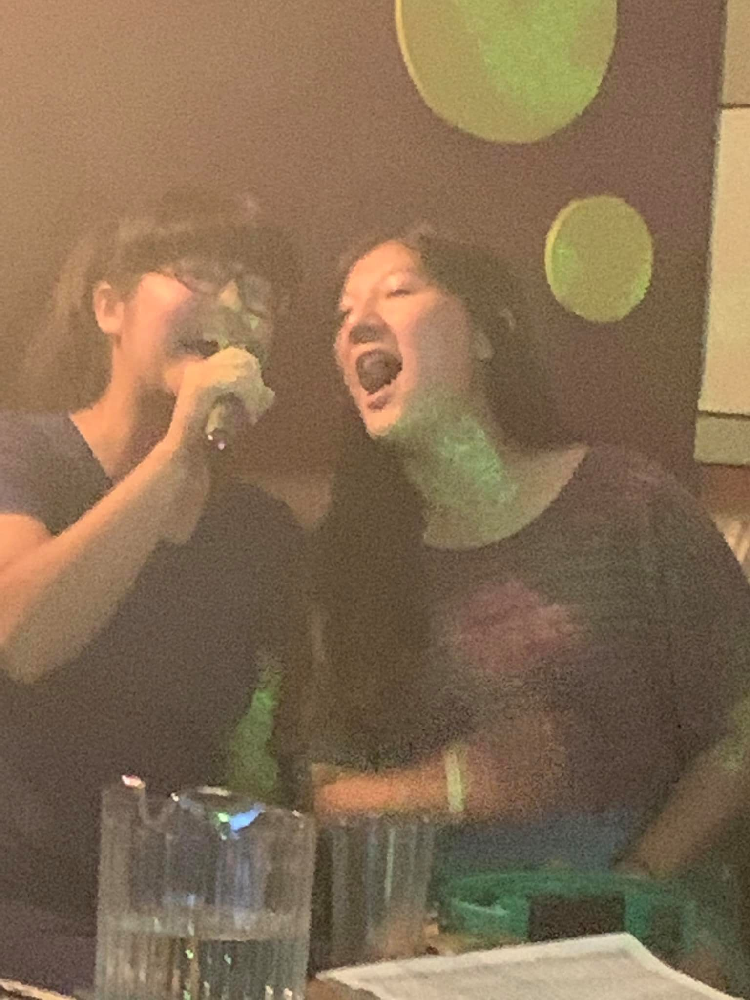

Hobbies
Outside of coding and problem-solving, I occasionally enjoy treating myself to various fun activities such as:
Gaming
When I got my first computer, I'd be on Paint all day just doodling to my heart's content or I'd be on Microsoft Word writing either fictional stories or journal entries revolving current events and then giving them the most colorful background I could find. When I finally discovered the Internet, it was life-changing and games took over my heart. I enjoy customization and strategy in games and am happy to be in the company of others, thus my favorite games are MMORPGs.
Volleyball & Biking
I don't exercise just for the sake of keeping fit- I like to have fun while I'm doing so. With friends, I will play volleyball as there are so many different ways that you can organize a game. I also enjoy biking as it is the most efficient way to keep fit, get where you need to go locally, save money, and do your part to keep the environment clean.
You might find me biking on the path from Caesar's Bay, Brooklyn to the Verrazzano Bridge or on the path along the Belt heading to Flatbush toward Rockaway Beach. I ride a nice and comfy Specialized Vita Hybrid.
Karaoke
I love a wide array of music, as I spent my childhood mornings before school listening to a bunch of different radio stations. Music really keeps me going and its lyrics often parallel with situations in life.
